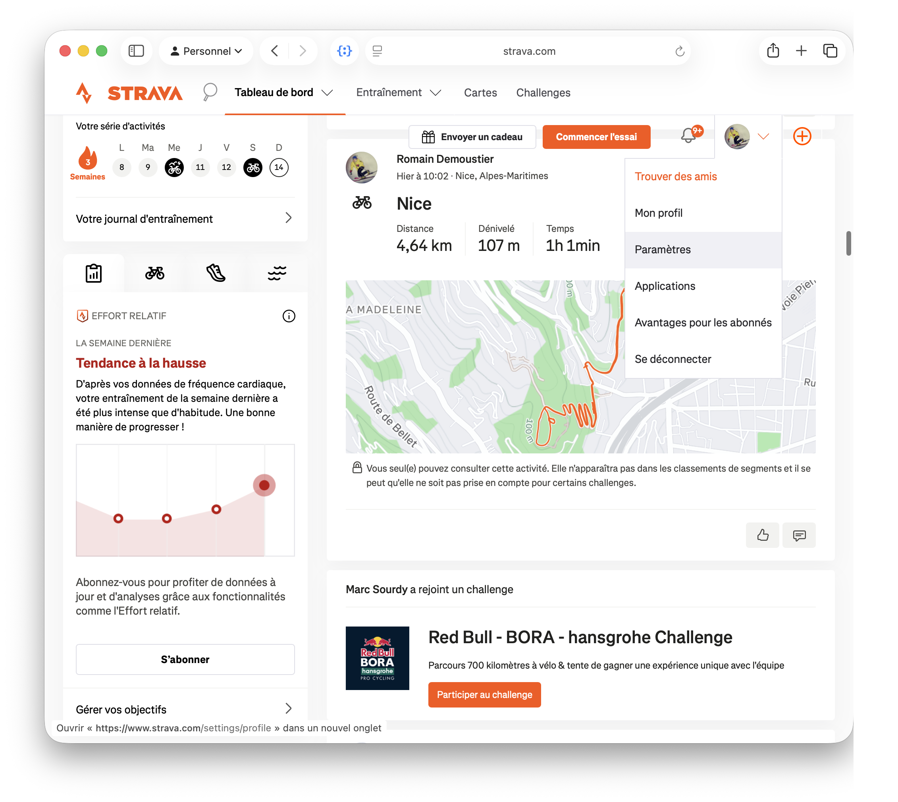
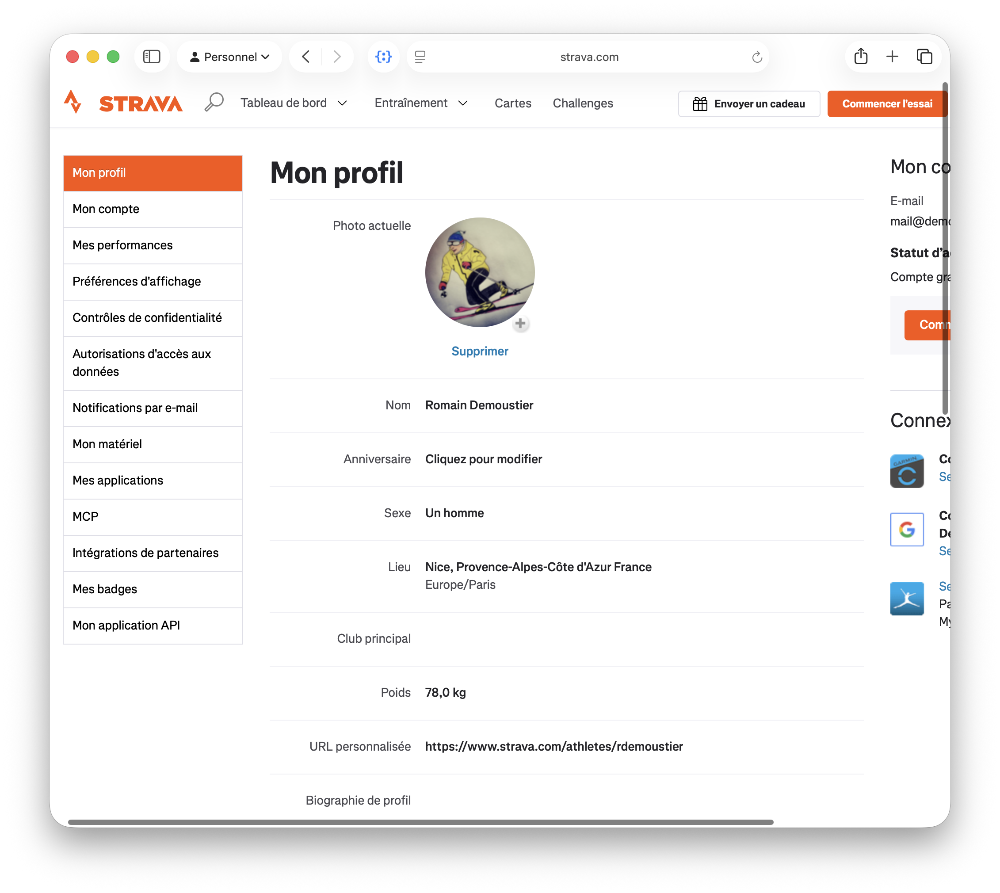
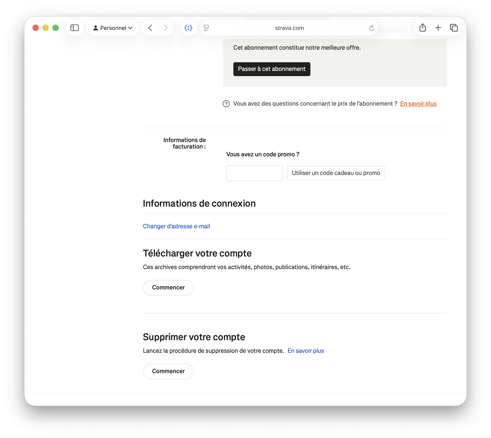
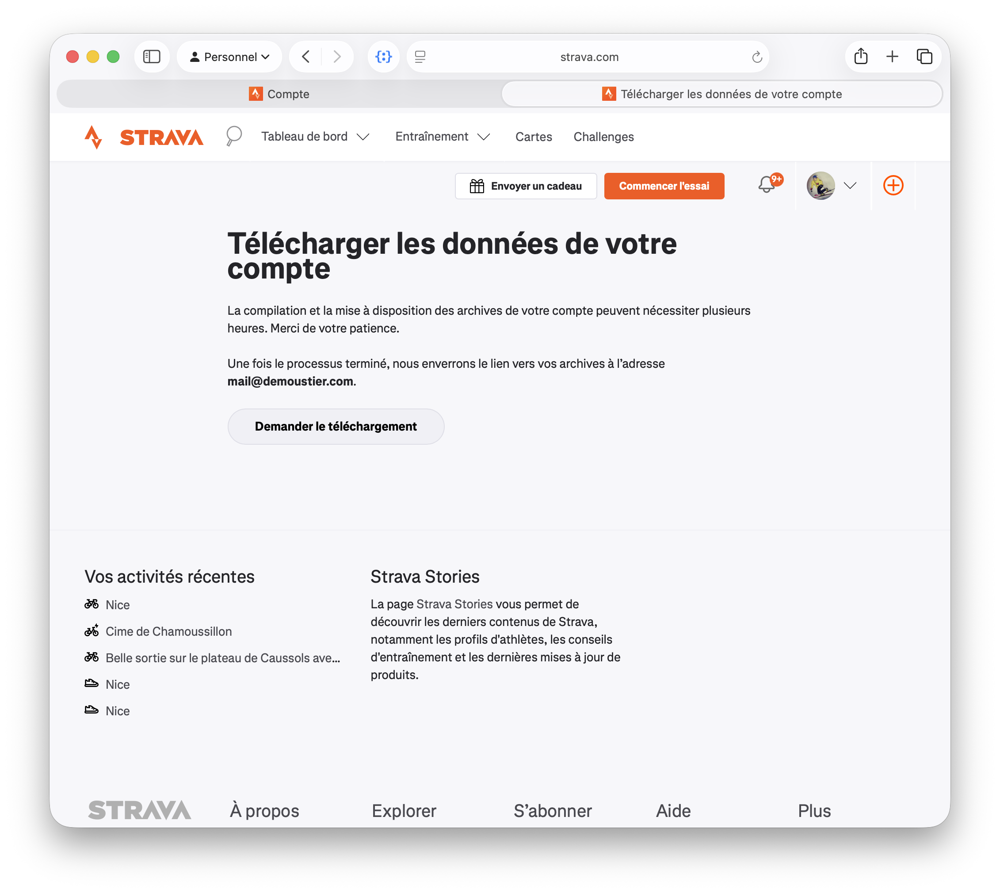
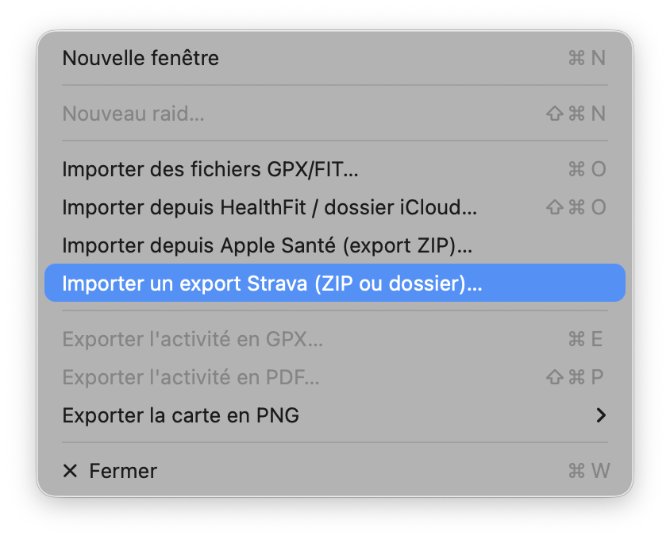

Strava permet de télécharger l'archive complète de vos activités. Voici comment l'obtenir, puis l'importer dans GPXManagement.
Sur Strava — demander l'archive
Depuis un ordinateur, ouvrez strava.com et connectez-vous à votre compte.
Cliquez sur votre photo de profil en haut à droite, puis sur Paramètres (Settings).

📷 Capture à ajouter :aide/strava/img/etape-2.pngDans le menu de gauche, choisissez Mon compte (My Account).

📷 Capture à ajouter :aide/strava/img/etape-3.pngFaites défiler la page Mon compte jusqu'à la section Télécharger votre compte (« Ces archives comprendront vos activités, photos, publications, itinéraires, etc. ») et cliquez sur Commencer.

📷 Capture à ajouter :aide/strava/img/etape-4.pngSur la page Télécharger les données de votre compte, cliquez sur Demander le téléchargement. Strava confirme que le lien sera envoyé à votre adresse e-mail.

📷 Capture à ajouter :aide/strava/img/etape-5.pngLa préparation peut prendre plusieurs heures. Quand l'e-mail de Strava arrive, ouvrez-le et téléchargez le fichier .zip de vos archives.
Dans GPXManagement — importer l'archive
Dans la barre de menus, allez dans Fichier ▸ Importer un export Strava (ZIP ou dossier)…

📷 Capture à ajouter :aide/strava/img/etape-7.pngChoisissez le fichier export_….zip (ou le dossier déjà décompressé). GPXManagement extrait les traces, détecte le type d'activité et les ajoute à votre bibliothèque — les doublons sont ignorés automatiquement.